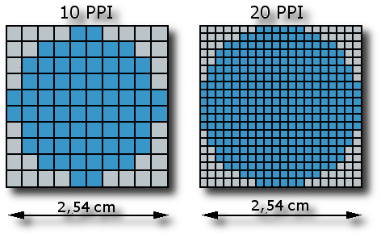

En CSS las unidades de medida sirven para especificar las dimensiones de los elementos en una páginas web. Hay 2 tipos principales: unidades absolutas y unidades relativas.
Las absolutas tienen un valor fijo, mientras que las relativas se basan en el tamaño de otros elementos o del viewport.
Ejemplo de aplicación de unidad (absoluta):
p{
width: 700px;
} /* El ancho de los párrafos tendrán 700 píxels */
Unidades absolutas
Las unidades absolutas son siempre fijas, no cambian, son siempre iguales a una unidad de medida física. Por ejemplo el píxel.
Para la web son poco adecuadas porque al final no se adaptan bien a las diferentes resoluciones de las pantallas.
Tipos de unidades absolutas
Unidad
Significado
Medida aproximada
Comentarios
px
Píxels
1px = 0.26mm
Para pantallas
pt
Puntos
1pt = 0.35mm
Para medios impresos
in
Pulgadas
1in = 25.4mm
Estas unidades son muy poco utilizadas
cm
Centímetros
1cm = 10mm
pc
Picas
1pc = 4.23mm
mm
Milímetros
1mm = 1mm
Q
Cuarto de mm
1Q = 0.248mm
De todas las unidades absolutas, las más utilizadas son px para pantallas y pt para impresión.
Se pueden establecer hojas de estilo para imprimir, para eso está el atributo media.
CSS3 Media Types
Son una forma de clasificar los dispositivos donde se mostrará un documento web, permitiendo aplicar estilos CSS específicos según el tipo de dispositivo (tipo de pantalla, dispositivo de impresión, dispositivos de voz, etc).
- all: Se aplica a todos los dispositivos.
- screen: Se aplica a pantallas de computadoras, tablets, smartphones, etc.
- print: Se aplica a impresoras.
- speech: Se aplica a dispositivos que leen el contenido en voz alta (lectores de pantalla).
Esta hoja de estilo se va a aplicar para el medio screen.
Importancia de los tipos de medios:
- Diseño responsive: Se adapta a diferentes pantallas y dispositivos.
- Experiencia de usuario
- Accesibilidad: Permiten adaptar el contenido para usuarios con discapacidades, como aquellos que utilizan lectores de pantalla.
Nota: Ojo con la densidad de píxels
Dependiendo de la pantalla podemos tener una pulgada con una densidad de píxels de 10ppp y en cambio en otra pantalla con más densidad en una pulgada de 20ppp.
Es decir, al aplicar unidades píxels puede que no quede igual en unas pantallas que en otras.
Píxels por pulgada

Unidades relativas
Son un tipo de medida máas potente y habitual en el CSS que creamos generalmente.
Al contrario que las unidades absolutas, las unidades relativas dependen de algún otro factor.
Tipos de unidades relativas:
- %: Relativa a herencia (concretamente al elemento padre) - 50% = mitad del padre
- em/rem: Relativo al font-size en ese elemento - 1.5em = 1.5*16px (24px)
- ex/rex: Relativo a la altura del caracter x minúscula.
- ex/rex: Relativo al ancho del caracter 0
- ex/rex: Relativo a la altura del primer caracter en mayúscula.
- ex/rex: Relativo al ancho del glifo CJK (chino, japones, coreano)
- ex/rex: Relativo al line-height en ese elemento.
Las más conocidas son %, em y rem, por lo que vamos a ver estas:
La unidad de %: El valor de porcentaje establecido depende del tamaño del elemento padre inmediato.
La unidad em: Se utiliza para definir un tamaño en base al tamaño que tiene establecido el navegador en la tipografía (tamaño fuente) en el elemento HTML actual donde se aplica. Por defecto, y para simplificar, se puede asumir que 1em es un valor aproximado a 16px. 2em serían 32px, 0.5em = 8px, etc.
La unidad rem (root element): Esta unidad está prefijada por la letra r (root o raiz). Esta unidad toma la idea de la unidad em, pero en lugar de tomar el tamaño font-size del elemeto actual, toma el tamaño del elemento raiz, es decir, el elemento HTML o la pseudoclase :root. Esta forma nos permite trabajar con múltiplos del tamaño base.
La unidad ex: Es una unidad menos conocida, que hace referencia al tamaño de alto de la 1ª letra minúscula de la tipografía. Podemos asumir que 1ex es aproximadamente 0.5em, es decir, la mitad del font-size del elemento actual.
Unidades del viewport
Existen unas unidades de nueva generación que resultan muy útiles, porque dependen del viewport (región visible de la página web en el navegador). Con estas unidades podemos hacer referencia a un porcentaje concreto del tamaño específico que tengamos en la pantalla del navegador.
Es decir, cada vez que hagamos referencia a una unidad precedida por v estamos haciendo referencia a un % del tamaño total de la ventana. De esta forma, podemos hacer que elementos concretos tengan valores proporcionales al tamaño de la ventana del navegador.
Tipos de unidades del viewport:
- vw: viewport width: 1vw = 1% del ancho del navegador.
- vh: viewport height: 1vh = 1% del alto del navegador.
- vmin: viewport minimum: 1vmin = 1% del alto o ancho (el mínimo).
- vmax: viewport maximum: 1vmax = 1% del alto o ancho (el máximo).
- vi: viewport inline: Versión lógica inline de vw y/o vh.
- vb: viewport block: Versión lógica en bloque de vw y/o vh.
La unidad vw (viewport width): La unidad vw es un tipo de unidad que hace referencia al ancho del viewport. Por ejemplo, si definimos 50vw estamos indicando un 50% del ancho actual del navegador.
La unidad vh (viewport height): La unidad vh hace referencia de la misma forma al alto del viewport.
La unidad vmin y vmax: De varios valores se queda con el máximo o con el mínimo.
Consejo: La elección de las unidades es libre perointentaremos usar estas;
px para distancias pequeñas (anchos de bode, margenes, etc), em/rem para tamaños de fuente, salvo que se quiera aprovechar en el diseño la composición de tamaños en cuyo caso se usarán porcentajes % y vw, vh y % para tamaños de elementos grandes y distribución de elementos por pantalla.
Funciones de cálculo
Hemos visto unidades relativas y absolutas pero en CSS también podemas hacer cuentas simples como +, -, * y / para calcular tamaños con funciones matemáticas.
No son mas que funciones de apoyo que podemos utilizar en css para realizar cálculos u operaciones sencillas sin tener que abandonar CSS y/o recurrir a javascript.
Hay muchas funciones pero las más importantes son:
calc(): Permite calcular operaciones con unidades CSS como px, %, vw, vh u otras (incluso combinadas).
min() / max(): Permite calcular el valor mínimo o máximo de las unidades indicadas.
Funcion calc()
En ocasiones necesitamos indicar valores precalculados por el navegador, ya porque sea más cómodo o porque queremos tener el código más organizado o ácil de mantener.
Por ejemplo la suma de 2 valores que ha priori desconocemos pero que el navegador si puede calcularlo.
Article ocupará el 50% de la pantalla + 100px. Se deberá tener en cuenta elementos como márgenes o scroll ya que con % influye. Se podría sortear con vw poe ejemplo.
Funcion min() y max()
En algunas ocasiones, necesitaremos que en una propiedad se aplique un valor entre varias posibilidades posibles, y lo que te interesa es el valor más pequeño (por ejemplo).
CSS permite realizar esto utilizando la función min() que nos permite elegir el valor más pequeño de 2 o más posibilidades aplicadas por parámetro. (*max() devolverá el mayor de los valores).
Ejemplo:
.elemento{
width: min(200px, 25%);
height: 200px;
}
/* Si el 25% de la pantalla es menor que 200px se quedará con el 25%, pero si 200px es menor que el 25% de la pantalla se quedará con 200px. */
Colores en CSS
Hay varias formas de establecer colores en CSS, vamos a ver las 3 más importantes:
red: Color mediante palabra clave
rgb(): Usa una función rgb (rojo, verde, azul).
#rrggbb: Notación rgb abreviada en hexadecimal (Recomendada)
Podemos hacer pruebas con estas 2 propiedades:
color: Establece el color de la fuente
background-color: Establece el color de fondo de un elemento.
Fuente en amarillo con fonzo azul
div{
color: yellow;
background-color: blue;
}
Podemos consultar en google Plabras clave color o sus formas rgb y hexadecimal.